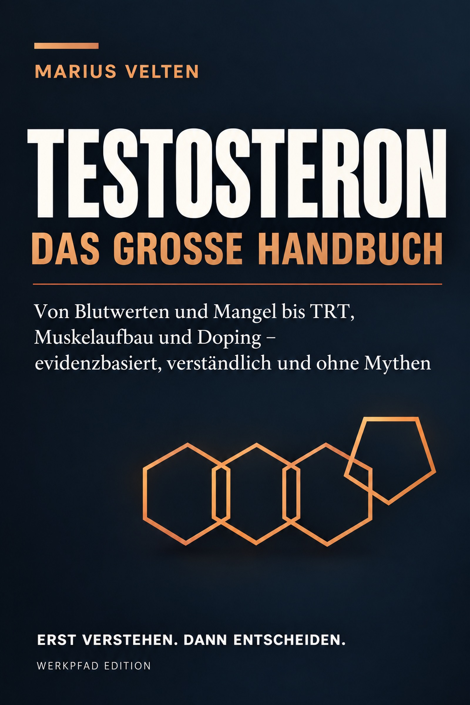

TESTOSTERON
Das große Handbuch
Von Blutwerten und Mangel bis TRT, Muskelaufbau und Doping – evidenzbasiert, verständlich und ohne Mythen.
Ein Mann hat Symptome. Ein Laborwert liegt am unteren Rand. Ein Arzt sagt „noch normal“, ein Forum „katastrophal niedrig“, eine Klinik bietet TRT. Dieses Buch ist für den Raum dazwischen.
Es erklärt nicht nur, was Gesamt-Testosteron, SHBG, LH, FSH oder Estradiol bedeuten, sondern warum dieselbe Zahl bei zwei Männern völlig unterschiedliche Geschichten erzählen kann.
Nicht mehr nur Werte vergleichen.
Labor richtig lesen
Gesamt-T, freies T, SHBG, Albumin, LH, FSH, Prolaktin, Estradiol, Hämatokrit, PSA und typische Muster.
Ursachen unterscheiden
Primär, sekundär, funktionell – plus Schlafapnoe, Adipositas, Schilddrüse, Medikamente, Krankheit und Energiedefizit.
TRT realistisch bewerten
Indikation, Erwartungen, Präparate, Monitoring, Fertilität, Herz, Prostata, Blutbild und Absetzen.
Fitness einordnen
Muskelaufbau, Körperzusammensetzung, Ersatztherapie, Optimierung, AAS, SARMs und Doping.
Studien lesen lernen
Population, Endpunkt, Dauer und Übertragbarkeit statt „eine Studie beweist …“.
Entscheidungen strukturieren
Diagnosesicherheit, Reversibilität, Ziel, Konsequenzen und Alternativen.